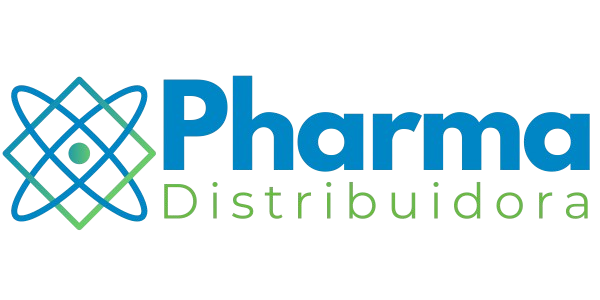

A Distribuidor Nacional Farmaceutico LTDA é uma empresa especializada na comercialização de medicamentos e produtos farmacêuticos, comprometida com a saúde, o bem-estar e a qualidade de vida de seus clientes. Fundada com o propósito de oferecer acesso facilitado a medicamentos de qualidade com segurança, agilidade e responsabilidade, nossa missão é ser referência no setor farmacêutico por meio de um atendimento humanizado, preços justos e um portfólio diversificado.
Nosso catálogo abrange desde medicamentos de referência e genéricos até produtos controlados, medicamentos isentos de prescrição (MIPs), dermocosméticos, suplementos, itens de cuidados pessoais e produtos voltados à saúde preventiva. Trabalhamos com laboratórios renomados e fornecedores certificados, garantindo a procedência, a eficácia e a segurança dos nossos produtos.
Além da venda direta ao consumidor final, atuamos com distribuição para clínicas, consultórios, hospitais e empresas do setor da saúde, oferecendo soluções personalizadas e logística eficiente. Nosso sistema de atendimento é multicanal, contando com loja física, e-commerce intuitivo e serviço de delivery com entrega rápida e segura, respeitando todas as normas da Anvisa e os padrões de qualidade exigidos pela legislação brasileira.
Acreditamos que cuidar da saúde é um direito de todos. Por isso, investimos continuamente em tecnologia, capacitação da equipe, controle de estoque inteligente e atendimento farmacêutico especializado. Nossa equipe é composta por farmacêuticos qualificados e profissionais treinados para oferecer suporte técnico, orientação sobre medicamentos e acompanhamento contínuo de tratamentos, sempre com ética, empatia e transparência.
Na Distribuidor Nacional Farmaceutico LTDA, a saúde vem em primeiro lugar. Mais do que vender medicamentos, buscamos construir uma relação de confiança com nossos clientes, promovendo informação, prevenção e acesso ao tratamento. Nosso compromisso é com a vida, e é por isso que somos mais do que uma farmácia: somos seu parceiro em saúde.
Rua Hannemann, 67, Canindé - São Paulo-SP CEP:03031040